Apie
Darbai
Kristina Kašūraitė

Mano darbai
Sveiki
Esu Kristina Kašūraitė, grafikos ir UI/UX dizainerė. Turiu metus patirties tačiau nuolat tobulinu žinias dalyvaudama kursuose, skaitydama ir mokydamasi iš kitų. Koncentruojuosi į svetainių dizaino, branding’o ir iliustracijų kūrimą.
Specializacijos
Branding’as
Logotipai; identiteto kūrimas; pakuotės.
Iliustracijos
Atvirutės; charakterių kūrimas.
Svetainių dizaininimas
Prototipavimas; UI/UX dizainas.
Reklaminiai skelbimai
Plakatai; socialinių tinklų vizualai.